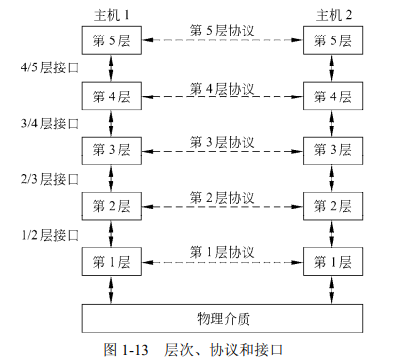

计算机网络课程作业（第一章）
试题1.1为什么协议实现的细节、接口的规范不属于网络体系结构的内容？
网络体系结构的规范必须包含足够的信息，以便实现者为每一层编写的程序或者设计的硬件能遵守有关的协议。实现细节和接口规范不属于网络体系结构的内容，因为它们隐藏在机器内部，对于外界是不可见的。甚至，一个网络中所有机器上的接口也不必都一样，只要每台机器能够正确地使用所有的协议即可。一个特定的系统所使用的一组协议，即每一层一个协议，称为协议栈（protocol stack）。网络体系结构、协议栈以及协议本身是本书的主要内容。
试题1.2 “一个网络中所有机器上的接口不必都一样”是否正确？
正确，原因见1.1
试题1.3“网络中每台机器只要能够正确使用所有协议即可，不必要求所有机器上的接口都一样”是否正确？
正确，原因见1.1
试题1.4“不同的网络，其层的数目、各层的名字、内容和功能都不尽相同”是否正确？
正确
P23
为了降低网络设计的复杂性，绝大多数网络都组织成一个层次栈（a stack of layer）或分级栈（a stack of level），每一层都建立在其下一层的基础之上。层的个数、每一层的名字、每一层的内容以及每一层的功能各个网络不尽相同。每一层的目的是向上一层提供特定的服务，而把如何实现这些服务的细节对上一层加以屏蔽。从某种意义上讲，每一层都是一种虚拟机，它向上一层提供特定的服务。
试题1.5 “网络的每一层都可看作一种虚拟机，它向上一层提供特定服务”是否正确？
正确
试题1.6 “网络软件是高度结构化的”是否正确？
正确
P22
最初，计算机网络设计主要考虑的是硬件，其次考虑的才是软件。这种策略不再行得通。现在的网络软件已经是高度结构化的了。……这里描述的方法构成了本书的基石，以后还将会多次重复提到。
试题1.7“一台机器上的第n层与另一台机器上的第n层进行对话。在对话中用到的规则和约定合起来称为第n层协议”是否正确？
正确
P23
一台机器上的第 n 层与另一台机器上的第 n 层进行对话，该对话中使用的规则和约定统称为第 n 层协议。
试题1.8“对等体可能是进程、硬件设备、或人” 是否正确？
正确
P23
不同机器上构成相应层次的实体称为对等体（peer）。这些对等体可能是软件过程、硬件设备，或者甚至是人类。换句话说，正是这些对等体为了实现彼此沟通才使用协议来进行通信。
试题1.9在哪一层，数据从发送机器直接传递到接收机器？其它层次的数据实际传递方向和逻辑传递方向？
物理层
实际传递方向
发送机器：自上而下
接受机器：自下而上
逻辑传递方向
从发送机器的
对等体到接受机器的同层对等体P23
实际上，数据并不是从一台机器的第 n 层直接传递到另一台机器的第 n 层。相反，每一层都将数据和控制信息传递给它的下一层，这样一直传递到最低层。第 1 层下面是物理介质（physical medium），通过它进行实际的通信。在图 1-13 中，虚线表示虚拟通信，实线表示物理通信。
试题1.10“协议涉及到不同机器上对等实体间发送的协议数据单元”是否正确？
正确
试题1.11协议层次结构每一层都是用软件实现的吗？
不是
P26
值得指出的是，协议层次结构中的较低层往往由硬件或者固件实现。然而，即使它们被（全部或者部分）嵌入到硬件中，仍然会涉及复杂的协议算法。
试题1.12当网络设计者决定一个网络应该包含多少层，以及每一层应该提供哪些功能时，其中最重要的一个考虑是什么？为了使得这个考虑实际可行，对每一层有什么要求？
必须定义清楚层与层之间的接口
要求每一层完成一组特定的有明确含义的功能
在每一对相邻层次之间的是接口（interface）。接口定义了下层向上层提供哪些原语操作和服务。当网络设计者在决定一个网络中应该包含多少层，以及每一层应该提供哪些功能时，其中最重要的一个考虑是必须定义清楚层与层之间的接口。为了做到这一点，要求每一层完成一组特定的有明确含义的功能。
试题1.13在划分每一层的功能时，需要考虑什么？
尽可能地减少层与层之间必须要传递的信息量
试题1.14层之间清晰的接口会带来什么好处？
- 尽可能地减少层与层之间必须要传递的信息量
- 使得同层协议的替换更加容易
除了尽可能地减少层与层之间必须要传递的信息量外，层与层之间清晰的接口使得同层协议的替换更加容易，即某一层的当前协议或实现替换成另一个完全不同的协议或者实现 （比如说，所有的电话线路被替换成卫星信道）； 因为对于新协议或新实现来说，它所要做的仅仅是向紧邻的上层提供与旧协议或者旧实现完全相同的服务。一般来说，对于同一个协议不同的主机使用了不同的实现（经常由不同的公司编写代码）。事实上，某个层次的协议本身是可以改变的，无需通知上层和下层。
试题1.15“服务定义了某层打算代表其用户执行哪些操作，但并不涉及如何实现这些操作”是否正确？
正确
P31
服务是指某一层向它上一层提供的一组原语（操作）。服务定义了该层准备代表其用户执行哪些操作，但是它并不涉及如何实现这些操作。服务与两层之间的接口有关，低层是服务提供者，而上层是服务用户。
试题1.16“服务涉及到两层之间的接口，其中低层是服务提供者，上层是服务的用户”是否正确？
正确
试题1.17网络实体用什么来实现它们的服务定义？
协议
对等实体利用协议来实现它们的服务定义，它们可以自由地改变协议，只要不改变呈现给它们用户的服务即可。
试题1.18为什么可以自由改变协议，但不能改变服务？
- 改变协议只会影响对等实体之间的通信方式，不会影响上下层之间的功能调用。只要保证双方使用相同或兼容的协议即可。
- 改变服务会影响上下层之间的功能调用，可能导致数据丢失、错误或不兼容。每一层都依赖于下一层提供的固定格式和内容的数据单元。
试题1.19协议和服务的关系是什么？
- 协议和服务相互依赖，相互支持。没有协议就没有服务，没有服务就无法执行协议。
- 协议和服务都遵循分层原则，每一层都有自己的协议和服务。上一层只能看到下一层提供的服务，而不知道其具体实现细节。
- 但是。
服务是指某一层向它上一层提供的一组原语（操作）。服务定义了该层准备代表其用户执行哪些操作，但是它并不涉及如何实现这些操作。服务与两层之间的接口有关，低层是服务提供者，而上层是服务用户。
协议是一组规则，规定了同一层上对等实体之间所交换的数据包或者报文的格式和含义。对等实体利用协议来实现它们的服务定义，它们可以自由地改变协议，只要不改变呈现给它们用户的服务即可。按照这种方式，服务和协议是完全相分离的。
服务涉及层与层之间的接口，如图 1-19 所示。相反，协议涉及不同机器上两个对等实体之间发送的数据包。
试题1.20“面向连接服务不一定是可靠的服务，而无连接服务可能是可靠的服务”是否正确？
正确
试题1.21“数据报服务是一种不可靠的无连接服务”是否正确？
正确
P28
不可靠（意味着没有被确认）的无连接服务通常称为数据报服务（datagram service）
试题1.22 “在广播式网络中，路由问题比较简单，所以网络层往往比较薄，甚至根本不存在”是否正确？
正确
在广播式网络中，路由问题比较简单，所以网络层往往比较单薄，甚至根本不存在
试题1.23“传输层是一个真正的端到端的层”是否正确？
正确
传输层是真正的端-端的层，它自始自终将数据从源端携带到接收方。换句话说，源机器上的一个程序利用报文头和控制信息与目标机器上的一个类似程序进行会话。在其下面的各层，每个协议涉及一台机器与它的直接邻居，而不涉及最终的源机器和目标机器，即源机器和目标机器可能被多个中间路由器隔离了。第 1 层到第 3 层是链式连接的，而第 4层到第 7 层是端-端的
试题1.24 “协议存在于每台机器与它的直接邻居之间，而不存在于最终的源机器和目标机器之间，OSI模型的哪些层可能存在这种情况？
物理层 数据链路层 网络层
试题1.25“OSI模型的1~3层中，源与目标端间的通信路径可能是串连而成的，而在4～7层则一定是端到端的”是否正确？
正确
试题1.26当一个浏览器需要一个Web页面时，它怎么做？
当浏览器需要一个 Web 页面时，它通过 HTTP 将所要页面的名字发送给服务器，然后服务器将页面发回给浏览器。
试题1.27广域计算机网络的鼻祖？
广域网的鼻祖是美国国防部高级研究计划局（ARPA）建立的ARPAnet。它是最早使用分组交换技术的网络，连接了不同地区和类型的计算机，为后来的互联网奠定了基础。它也是第一个实现TCP/IP协议的网络，为网络通信提供了统一的标准。
试题1.28 “TCP/IP体系结构能够以无缝的方式连接多个异构网络”是否正确？
正确
试题1.29什么网络交换技术使得传输路径上即使出现一些线路中断或设备故障，也可能不会影响端节点间的通信？
分组交换、报文交换
试题1.30 TCP/IP模型的哪一层是将整个网络体系结构贯穿在一起的关键层？
互联网层
试题1.31下面的说法正确的有：（ ）
（1）协议栈的每一层都为它的上一层执行一些服务。
（2）服务的定义指明了协议栈的某层做些什么，而不是上一层的实体如何访问这一层，或这一层是如何工作的。
（3）服务定义了协议栈某层的语义。
（4）协议栈的每一层的接口告诉上层的进程应该如何访问本层。如规定有哪些参数、结果是什么。但是它并没有说明本层内部是如何工作的。
（5）协议栈的每一层可以随意改变协议，只要相应的接口不变，不会影响其它层。
12345
试题1.32下面的说法正确的有：（ ）
（1）在有线网中，若链路层省略差错控制功能，而由高层完成，有利于提高协议栈的效率。
（2）为提供无线多跳网络的端到端传输效率，链路层有必要实现差错控制。
（3）OSI模型未能实现商业化，主要在于其糟糕的标准制定时机，以及糟糕的技术、实现和政策。
（4）物理层必须考虑传输介质的特性。
（5）链路层的任务是确定帧的起止位置，并将其从传输介质的一端按照期望的可靠程度发送到另一端。
12345
试题1.33是否所有的广域网都是点对点式的分组交换方式？
试题1.34 横贯大陆的光纤连接的网络有何特点？同一大楼内由56kbps调制解调器和电话线连接的计算机间通信的特点？（从带宽和延时角度阐述）
横贯大陆的光纤连接的网络的特点是带宽极宽，传输速度快，延时小。光纤中电磁波的传播速率约为2.0*10^5km/h，每1000km光纤传播时延5ms。
同一大楼内由56kbps调制解调器和电话线连接的计算机间通信的特点是带宽较小，传输速度慢，延时大3。电话线中电缆中电磁波的传播速率约为 2.3*10^5km/h，每1000km电话线传播时延6.5ms。
试题1.35 针对数字化的语音流，要让网络提供好的服务质量，需要考虑哪些参数？
针对数字化的语音流，要让网络提供好的服务质量，需要考虑以下参数：
- 带宽：语音流需要足够的带宽来保证传输速度和清晰度。
- 延时：语音流的延时应尽可能低，以避免对话中出现卡顿或回声。
- 抖动：语音流的抖动是指分组到达时间的变化，过高的抖动会导致语音失真或丢失。
- 丢包：语音流的丢包是指分组在传输过程中丢失，过高的丢包率会影响语音质量和连贯性。
试题1.36若两个通信端相距1000公里，中间需要经过一个存储－转发类型的机器转发，其处理一个标准长度的分组需要10微秒的时间，则中间节点的处理时间是否会成为一个主要因素？假设铜线和光纤中信号的传播速度是真空中光速的2/3，且不计分组的发送时间。
不会，10微秒对于这么长的距离传输来说，只是很短的一部分
试题1.37 在有些网络中，数据链路层处理传输错误的做法是，请求重传被损坏的帧。若一帧被损坏的概率为p，那么发送一帧所需要的平均传输次数是多少？假设确认帧永远不会丢失。
试题1.38一个系统有n层协议的层次结构。应用程序产生的消息的长度为M字节。在每一层需要加上一个h字节的头。请问，这些头需要占用多少比例的网络带宽？
试题1.39著名的电子通信类国际标准化组织有哪些？（至少列举5个）
- 国际电信联盟（ITU）：是联合国下属的专门机构，负责制定全球电信标准、协调无线电频谱和卫星轨道资源、促进信息社会发展等。
- 国际标准化组织（ISO）：是一个由各国标准化机构组成的非政府性国际组织，负责制定各行业领域的国际标准，包括通信技术等。
- 电气和电子工程师协会（IEEE）：是世界上最大的专业技术团体，由计算机和工程学专业人士组成，负责制定通信领域的IEEE 802标准等。
- 美国国家标准学会（ANSI）：是美国最大的非盈利性私营组织，负责制定和协调美国在各种领域使用的自愿性共识标准，包括通信技术等。
- 欧洲电信标准协会（ETSI）：是一个由欧洲各国政府、企业和研究机构组成的非营利性组织，负责制定欧洲在通信领域使用的自愿性共识标准，如GSM、UMTS等。
试题1.40度量计算机网络性能的重要性能指标包括哪些？（至少列举5个）
- 速率：连接在计算机网络上的主机在数字信道上传送数据位数的速率，单位是bps。
- 带宽：网络通信线路传送数据的能力，也称为最高数据率，单位是bps。
- 吞吐量：单位时间内通过网络的数据量，受网络带宽和负载等因素影响，单位是bps。
- 时延：数据从发送端到接收端所需的时间，包括发送时延、传播时延、处理时延和排队时延四个部分，单位是s。
- 丢包率：网络中丢失或损坏的数据包占总发送数据包的比例，反映了网络可靠性和稳定性。